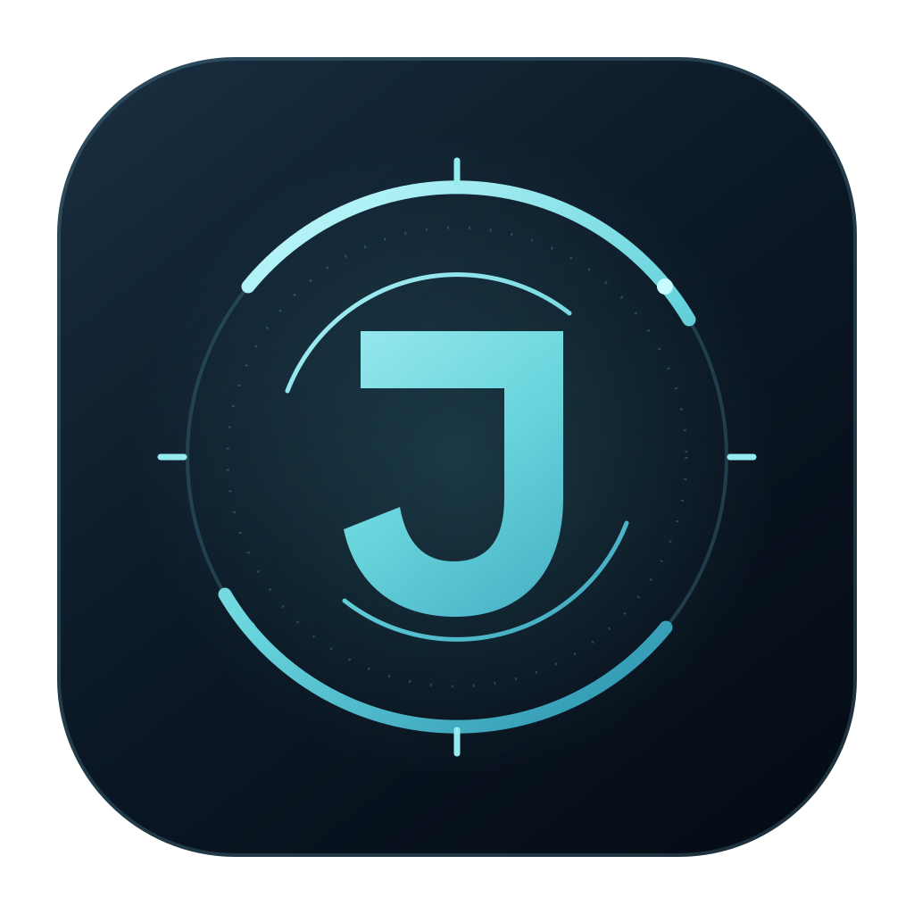
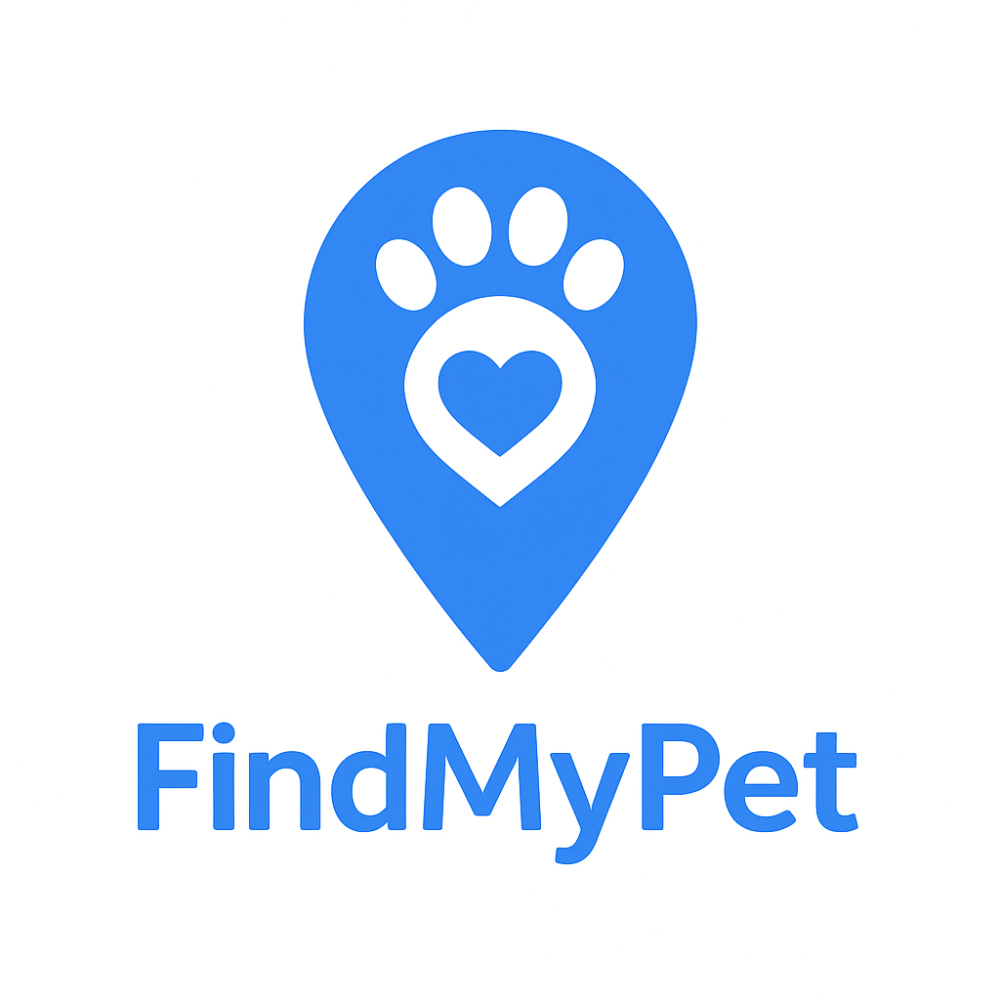

Open source / Memoria & AI
sbrain.
Un secondo cervello.
Con le tue connessioni.
Un motore di memoria personale, locale. Conserva fonti, collega informazioni e tiene traccia di come cambiano nel tempo.
Il mio piccolo laboratorio digitale
Sono Emanuele, sviluppatore.
Qui raccolgo quello che costruisco: progetti open source, strumenti utili e qualche esperimento.
01 / In evidenza
Open source / Memoria & AI
Un secondo cervello.
Con le tue connessioni.
Un motore di memoria personale, locale. Conserva fonti, collega informazioni e tiene traccia di come cambiano nel tempo.
Open source / Assistente personale
Un assistente.
Un po’ più personale.
Voce, agenti AI, strumenti MCP e routine. Un assistente che unisce modelli locali o cloud e memoria personale.

Progetto personale / Web
Un piccolo aiuto.
Per ritrovarsi.
Un progetto dedicato agli animali smarriti. La tecnologia al servizio di qualcosa di molto concreto: aiutarli a tornare a casa.

02 / La raccolta
Esperimenti recenti e cose fatte nel tempo.
Una memoria personale che collega fonti, idee e informazioni.
Un assistente personale con voce, agenti e routine.
Un aiuto per ritrovare gli animali smarriti.
Grafici e dati per seguire l’andamento della pandemia.
Un modulo semplice per leggere PDF all’interno di Joomla.
Esperimenti di riconoscimento facciale con Python e MySQL.
Un ambiente LAMP in Docker. Repository non più disponibile.
03 / Dietro al codice
Sempre qualcosaMi piace capire come funzionano le cose e provare a costruirne di nuove. Il web è il mio punto di partenza; l’intelligenza artificiale, uno dei territori che sto esplorando.
Questo sito è una raccolta personale: idee nate da un’esigenza, esperimenti fatti per imparare e strumenti condivisi perché possano essere utili anche ad altri.